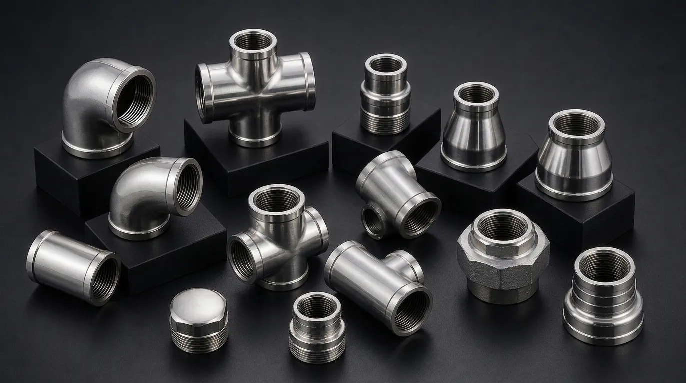

Gururaj Infradesigns is a trusted Stainless Steel 310 Pipe Fittings Manufacturer and Supplier in India, offering elbows, tees, reducers, caps, stub ends, and crosses with excellent oxidation resistance and high-temperature performance for industrial piping systems.
Stainless Steel 310 Pipe Fittings are widely used in applications involving elevated temperatures, thermal cycling, and oxidizing environments. Known for their high chromium and nickel content, these fittings offer excellent resistance to heat, oxidation, and scaling, making them suitable for demanding industrial processes. Gururaj Infradesigns is a trusted Stainless Steel 310 Pipe Fittings Manufacturer in India, supplying quality piping components for high-temperature industrial systems.
Our range includes elbows, tees, reducers, pipe caps, stub ends, and crosses manufactured to meet stringent industry requirements. These fittings are commonly used in heat treatment plants, furnaces, power generation facilities, petrochemical units, and process industries where conventional stainless steel grades may not provide adequate performance at elevated temperatures.

Stainless Steel 310 is a high-temperature austenitic stainless steel grade containing elevated levels of chromium and nickel, which provide excellent resistance to oxidation, scaling, and thermal fatigue. These properties make it suitable for piping systems operating in environments where exposure to continuous heat and fluctuating temperatures is common. As part of the broader range of Stainless Steel Pipe Fittings, Grade 310 is widely used in applications that demand reliable performance under elevated-temperature conditions.
Stainless Steel 310 Pipe Fittings are designed to maintain strength, corrosion resistance, and dimensional stability at elevated temperatures. These properties make them a preferred choice for heat treatment plants, petrochemical facilities, power generation units, and other high-temperature industrial applications.
| Parameter | Details |
|---|---|
| Material Grade | ASTM A403 WP310 |
| Product Types | Elbow, Tee, Reducer, Pipe Cap, Stub End, Cross |
| Standards | ASTM, ASME, ANSI, MSS SP |
| Size Range | ½" NB to 48" NB |
| Schedule Range | SCH 10 to SCH XXS |
| Manufacturing Process | Seamless & Welded |
| Connection Type | Butt Weld |
| Testing | PMI, Hydro Test, Visual Inspection |
| Certification | EN 10204 3.1 / MTC Available |
Stainless Steel 310 is specifically designed to perform reliably in elevated-temperature environments where oxidation and scaling resistance are critical for long-term service.
The high chromium content helps form a stable protective oxide layer, allowing the fittings to withstand prolonged exposure to hot gases and oxidizing atmospheres.
These fittings maintain strength and structural integrity under thermal stress, making them suitable for demanding industrial processing applications.
Stainless Steel 310 Pipe Fittings perform well in systems that experience repeated heating and cooling cycles, helping reduce the risk of premature material failure.
Their ability to withstand harsh operating conditions contributes to reduced maintenance requirements and improved operational reliability.
| Element | Composition (%) |
|---|---|
| Carbon | Max 0.25 |
| Chromium | 24.0 – 26.0 |
| Nickel | 19.0 – 22.0 |
| Manganese | Max 2.0 |
| Silicon | Max 1.5 |
| Phosphorus | Max 0.045 |
| Sulfur | Max 0.030 |
| Property | Value |
|---|---|
| Tensile Strength | 515 MPa Min |
| Yield Strength | 205 MPa Min |
| Elongation | 40% Min |
| Hardness | 95 HRB Max |
Stainless Steel 310 Pipe Fittings are widely used in heat treatment facilities where piping systems are exposed to continuous high temperatures and thermal cycling. Their excellent oxidation resistance helps maintain reliable performance in demanding operating conditions.
These fittings are commonly installed in industrial furnaces, kilns, and combustion systems due to their ability to withstand elevated temperatures without significant scaling or loss of strength.
Petrochemical plants utilize Stainless Steel 310 Pipe Fittings in high-temperature process lines where durability, corrosion resistance, and thermal stability are important for long-term operation.
Power plants use these fittings in piping systems handling hot gases, steam, and thermal fluids, where dependable performance under elevated temperatures is essential.
| Grade | Key Characteristics | Typical Applications |
|---|---|---|
| SS 304 | General corrosion resistance and versatility | Food Processing, Water Systems |
| SS 310 | Excellent heat and oxidation resistance | Furnaces, Heat Treatment Plants |
| SS 316 | Enhanced resistance to chlorides and chemicals | Marine, Chemical Processing |
| SS 904L | Superior resistance to aggressive chemicals | Chemical & Process Industries |
Stainless Steel 310 is primarily selected for high-temperature applications where oxidation resistance is a key requirement. While Stainless Steel 304 Pipe Fittings are suitable for general industrial service and Stainless Steel 316 Pipe Fittings perform well in corrosive environments, Stainless Steel 310 excels in continuous elevated-temperature applications where thermal stability is essential.
| Finish | Benefits |
|---|---|
| Pickled | Removes scale and improves corrosion resistance |
| Passivated | Enhances surface protection |
| Polished | Provides improved cleanliness and appearance |
| Mill Finish | Suitable for standard industrial use |
Proper finishing helps improve surface quality, corrosion resistance, and long-term performance in industrial piping systems.
Gururaj Infradesigns supplies Stainless Steel 310 Pipe Fittings in various sizes, schedules, and configurations to support high-temperature industrial applications. Our products are supplied to engineering companies, fabrication units, process industries, and project contractors requiring dependable piping solutions.
As a trusted supplier, we focus on providing consistent product quality, technical support, and reliable delivery schedules to meet project and maintenance requirements.
At Gururaj Infradesigns, quality is an integral part of our manufacturing and supply process. All pipe fittings undergo inspection for dimensional accuracy, workmanship, and material compliance before dispatch.
As an ISO Certified Company, we are committed to supplying reliable piping components that meet industrial expectations for quality, consistency, and performance.
Selecting the right pipe fitting grade depends on operating temperature, pressure conditions, process media, and service environment. Stainless Steel 310 is often chosen for applications involving elevated temperatures, but the most suitable material can vary based on project requirements. Our team can assist in identifying the appropriate fitting grade, size, and specification for your application. We work with engineers, fabricators, EPC contractors, and industrial buyers to provide practical guidance and dependable piping solutions for long-term performance.